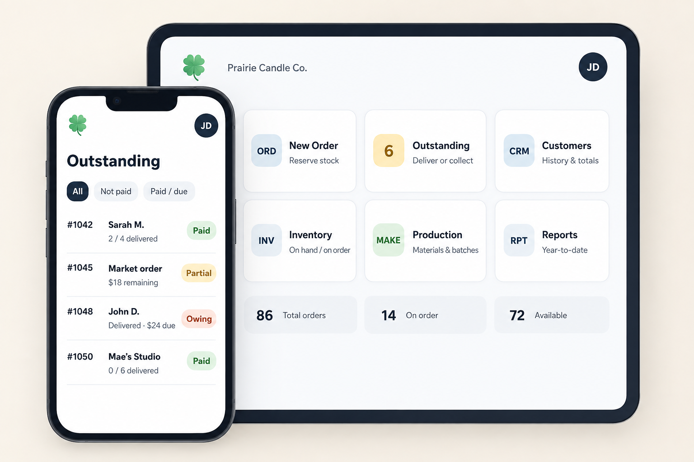
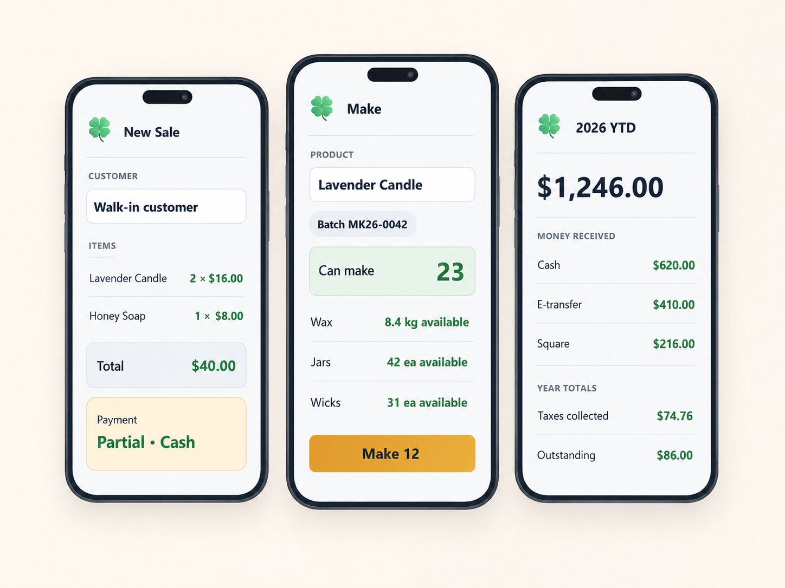

Make it
Recipes, materials, production runs and actual product costs.
Business tools built for people who make things
Inventory • Production • Orders • Sales • Expenses • Taxes
CloverBee Maker keeps the business side of a small-batch operation organized from the moment materials arrive to the moment an order is delivered. Know what you have, what is reserved, what it costs, what is due, and what you actually make.

One workflow, end to end
Recipes, materials, production runs and actual product costs.
Track materials and finished goods as on hand, committed and available.
Set stock aside for customer orders, markets and upcoming events.
Track customers, payments, promised dates and partial fulfilment.
Record expenses as they happen and export organized year-end records.
Less bookkeeping rework
Enter each purchase and expense as it happens. Keep recipes, inventory, production, orders and sales current through the year. When tax time arrives, export the records already organized for you or your accountant.
CloverBee Maker organizes business records; it does not provide tax or accounting advice.
More than a card reader
A checkout tool can tell you what sold. CloverBee Maker starts earlier: what you bought, what went into a product, what is reserved, what is due, what remains unpaid, and what the sale actually earned.
Turn materials into finished products while keeping inventory and costing connected.
Track promises, payment state, partial fulfilment and upcoming work.
Reserve stock for markets and events without pretending it has already sold.
See material cost and margin instead of relying on a rough selling-price guess.
Keep records current through the year, then export organized business data at year end.
Keep working at markets, workshops and rural locations even when the connection does not cooperate.
Payments without rebuilding your workflow
Payment integrations are planned for leading tap-to-pay providers, terminals and mobile wallets. CloverBee Maker is designed to connect payment status back to the order, customer and inventory workflow instead of becoming another disconnected checkout screen.
Payment integrations are planned functionality and are not available in the pre-release product yet.
Take the business with you

Simple pricing
Launch pricing shown in Canadian dollars. No ads on either tier.
Free
Run your craft business.
Maker
Understand and grow your craft business.
| Feature | Free | Maker |
|---|---|---|
| Users | 1 | Up to 4 |
| Authorized devices | 1 | Multiple |
| Core inventory, recipes, production, orders & sales | Yes | Yes |
| Event / market reservations | Yes | Yes |
| Order reminders | — | Yes |
| Customer sales linked to customer history | — | Yes |
| Customer analysis | — | Yes |
| Supplier reporting | — | Reports |
| Order/payment analytics | Limited | Expanded |
| Labour included in product cost | — | Manual input |
| Tax reporting | 1 basic summary | Full export package |
| Cloud sync / backup | Yes | Yes |
Growing-team features will come later. Advanced batch/lot workflows, role-based labour, deeper supplier analysis and a desktop experience are candidates for a future higher tier once the product has earned the complexity.
Pre-launch
CloverBee Maker is currently being built. Early users will help shape the workflows, terminology and reports before public release.